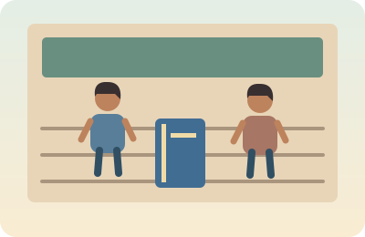

दृष्टिकोण और अंत
Point of view and ending
Audio uses your device’s Hindi voice; availability varies. No native recordings included.आज का नियम
Understand the conceptकथावाचक का दृष्टिकोण पाठक को उपलब्ध जानकारी तय करता है। अंत में हर समस्या का समाधान आवश्यक नहीं, पर कथानक में अर्थपूर्ण परिवर्तन होना चाहिए।
शब्द और अर्थ
Vocabularyकथावाचक बदलें
Visual grammarपात्र खुद घटना बता रहा है।
सभी रूप देखें
- प्रथम पुरुष: मैंने चिड़िया देखी। — पात्र खुद घटना बता रहा है।
- तृतीय पुरुष: नीलू ने चिड़िया देखी। — कथावाचक बाहर से बता रहा है।
वाक्य प्रयोगशाला
Sentence labसही विकल्प चुनकर उत्तर का कारण पढ़ें।
उत्तर और कारण
प्रथम पुरुष — मैं कथावाचक है।
उदाहरण और पठन
Examples & readingमैंने मैदान में चिड़िया देखी।
नीलू ने मैदान में चिड़िया देखी।
पहले वाक्य में पात्र स्वयं बता रहा है।
दूसरे में कथावाचक बाहर से घटना बता रहा है।
विस्तृत पठन
Extended reading
खोई हुई डायरी
अवनि को स्कूल की सीढ़ियों पर नीले रंग की एक डायरी मिली। उसने उसे खोलकर निजी बातें पढ़ने के बजाय सीधे कार्यालय में जमा कर दिया। कार्यालय के कर्मचारी ने कक्षा में सूचना भिजवाई कि किसी की डायरी मिली है। थोड़ी देर बाद एक छात्रा अपने नाम और डायरी के रंग की पहचान बताकर उसे लेने आई। अवनि को प्रसन्नता हुई कि उसने सही ढंग से सहायता की। अगले दिन दोनों पुस्तकालय में मिलीं और उन्होंने साथ बैठकर कहानी पढ़ी।
पठन-बोध
अवनि ने डायरी क्यों नहीं पढ़ी?
दूसरे व्यक्ति की निजता का सम्मान करने के लिए।
डायरी किस प्रकार लौटाई गई?
कार्यालय की सूचना और मालिक की पहचान से।
अवनि के निर्णय का कथानक पर क्या प्रभाव पड़ा?
डायरी सुरक्षित लौटी और नई परिचय की शुरुआत हुई।
बोलें और सोचें
Apply itएक घटना को मैं और वह दोनों दृष्टिकोणों से लिखें।
लेखन अभ्यास
Writing practiceउदाहरण को आधार बनाकर अपने स्वतंत्र वाक्य या अनुच्छेद लिखें।
अपना ज्ञान जाँचें
Check your learningमैंने चिड़िया देखी किस दृष्टिकोण का उदाहरण है?
उत्तर देखें
प्रथम पुरुष।
इस पाठ में दिए गए अर्थ से शब्द मिलाएँ: point of view
उत्तर
दृष्टिकोण
Completion is self-marked and saved locally.